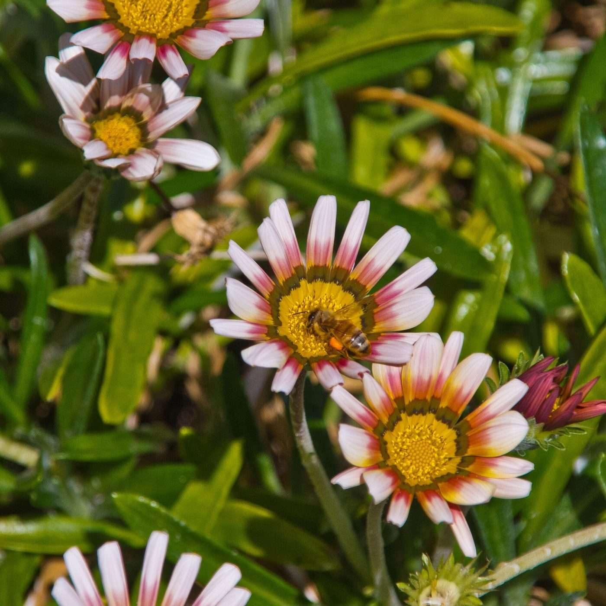

ABOUT
羽音のそばで、はちみつを味わう喫茶
鹿児島県南さつま市金峰町大坂にある小さな喫茶です。店主の上薗さんは、見学先でニホンミツバチのかわいらしさに魅了され、巣を分けてもらったのが養蜂の始まりだそうです。はじめて蜂蜜を口にしたときの驚きから、自家養蜂の蜂蜜を使ったお菓子やドリンクをお出ししています(2017年開店)。
店の近くには花の咲く庭と巣箱があり、巣箱からは羽音が聞こえます。店内には振り子時計の音が響き、息子さんが手がけた木の椅子やテーブルがあると紹介されています。営業は金曜・土曜の10時から16時です。
店名「ぶんぶん」の由来は確認できていません。ミツバチの羽音を重ねた響きだと感じるのは制作側のイメージです。


MENU
はちみつを味わうメニュー
取材記事(2025年6月時点)で紹介されていたものです。価格・最新の内容は準備中とし、お店にご確認ください。


VOICE
口コミ(イメージ例)
イメージ例
ハニーケーキのやさしい甘さに、ほっとしました。庭の花を眺めながらいただく時間がよかったです。
イメージ例
自家製のジンジャーエールが、さっぱりしていておいしい。金・土だけの営業なので、ゆっくり過ごしに行きます。
イメージ例
振り子時計の音が心地よく、静かに過ごせる喫茶です。木の椅子の座り心地も好きです。
上記は制作側が作成したイメージ例で、実在のお客様の声ではありません。

ACCESS
アクセス・ご案内
| 所在地 | 〒899-3402 鹿児島県南さつま市金峰町大坂3480-4 |
|---|---|
| 営業日・時間 | 金曜・土曜 10:00〜16:00(Instagramより。変更はInstagramでご確認ください) |
| 電話 | 準備中 |
| 価格・詳細 | 準備中 |
| @daizaka_bunbun |